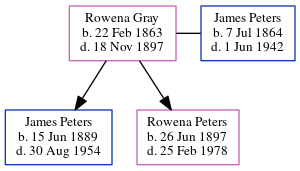

James Ivan Peters 1889 - 1954
[ Home ] | [ Calendar ] | [ Surnames Index ] | [ Errors ] | [ Family History ]A railway agent and the older of 2 children of James Peters and Rowena Gray, James Peters, the fourth cousin once-removed on the father's side of Nigel Horne, was born in New Westminster, British Columbia, Canada on 15 Jun 18891,2,3,4,5,6.
During his life, he was living in Prince Rupert, British Columbia, Canada in 19175; at 25 Wellington Street, British Columbia on 17 Apr 1918 (the same place as his father had been living in 1911); at 716 Yates Street, Victoria, British Columbia on 1 Jun 19211; in Vancouver, British Columbia, Canada in 1935; and at Kalamalka Hotel, Yale, British Columbia in 1940. During 1918, he was serving in the military (royal Flying Corps - service number 171763). On 26 Aug 1942 he arrived in Seattle, King, Washington, USA. On 5 Nov 1942 he arrived in Ketchikan, Alaska, USA.
He died on 30 Aug 1954 in Vancouver3,4,6,7 and was buried in Burnaby, British Columbia, Canada after 30 Aug 19544,6.
Parents
- James Bedford was born on 7 Jul 1864
- Rowena Elizabeth was born on 22 Feb 1863
Citations
- 1921 Census of Canada Ancestry.com Operations Inc (Marital Status: Single; Relation to Head of House: Head)
- British Columbia, Canada, Birth Index, 1872-1903 Ancestry.com Operations Inc
- British Columbia, Canada, Death Index, 1872-1990 Ancestry.com Operations Inc
- Canada, Find A Grave Index, 1600s-Current Ancestry.com Operations, Inc.
- Canada, Soldiers of the First World War, 1914-1918 Ancestry.com Operations, Inc.
- Web: International, Find A Grave Index Ancestry.com Operations, Inc.
- British Columbia, Canada, Death Index, 1872–1992 - Findmypast
Media
James Peters - Royal Flying Corps

James Peters - 1921 census

James Peters - gravestone

James Peters - arrival in Seattle

James Peters - arrival in Alaska

James Peters - 1935 voters list

James Peters - 1940 voters list

British Royal Air Force, Airmen's service records 1912-1939 Image - GBM-AIR79-1553-00131
British Columbia, Canada, Birth Index, 1854–1903 Transcription - US-MCV-101185-01454980693878524112
British Columbia, Canada, Death Index, 1872–1992 Transcription - US-MCV-126823-03719465579911091183
Canada Census 1911 Transcription - CAN-CENSUS-1911-00395717
British Columbia, Canada, Death Index, 1872–1992 Transcription - US-MCV-126823-0371946557991109
Family Tree
Map
Generated by ged2site. Last updated on Jul 3, 2024
Known Issues
Residence record for 17 Apr 1918 contains no citation
Residence record for 1935 contains no citation
Residence record for 1940 contains no citation
No records of living with anyone
Adding date of burial as 'aft 30 Aug 1954'
Location for "military service" on 1918 is empty